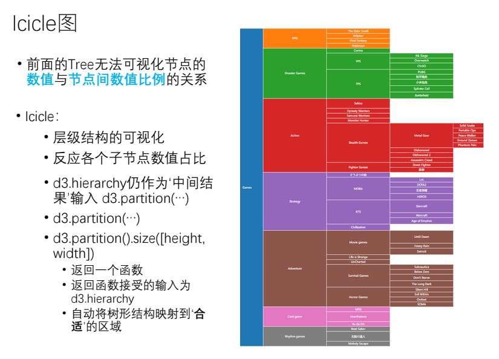

D3js - Icicle 冰锥(冰柱)图 实例
D3js 官网
、
D3js 画廊
、
D3js 指南
、
D3js 文档
、
SVG 文档
、
SVG 手册
、
d3.hierarchy(data[, children]) 计算层次布局
根据指定的层次结构数据构造一个根节点，指定的数据 data 必须为一个表示根节点的对象。
d3.partition(root) 创建分区图布局
生成邻接图：一个节点链接树图的空间填充变体，在将层次数据传递给 treemap 布局之前，必须调用 root.sum。在计算布局之前还可能需要调用 root.sort 对节点进行排序。

Icicle Demo